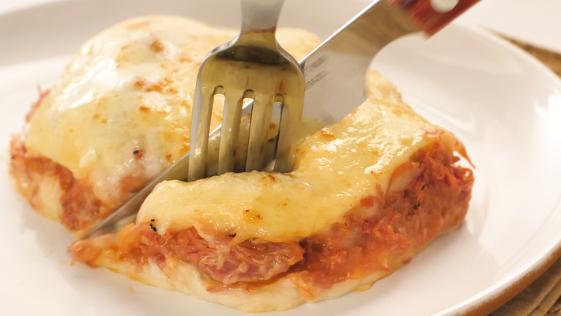

Escondidinho de Carne Seca

60 Min
6 Porções
Ingredientes
- 1 kg de mandioca cozida
- 1 lata de creme de leite com soro
- 2 colheres de margarina
- 1/2 kg de carne-seca dessalgada e cozida
- 1 cebola média picadinha
- 4 dentes de alho esmagados
- 2 tomates sem casca e picados
- sal e pimenta a gosto
- queijo ralado a gosto
Modo de preparo
- Esprema a mandioca ainda quente e leve em uma panela com a margarina e sal.
- Quando estiverem bem misturados acrescente o creme de leite, misture e reserve.
- Refogue a cebola e o alho em um fio de azeite.
- Acrescente a carne-seca desfiada e deixe fritar um pouco.
- Acrescente os tomates e deixe cozinhar até ficarem murchos e acerte o sal se achar necessário.
- Em um refratário untado com azeite, coloque uma camada do purê de mandioca, a carne seca e termine com o restante do purê.
- Polvilhe com queijo parmesão ralado e leve ao forno pra gratinar.